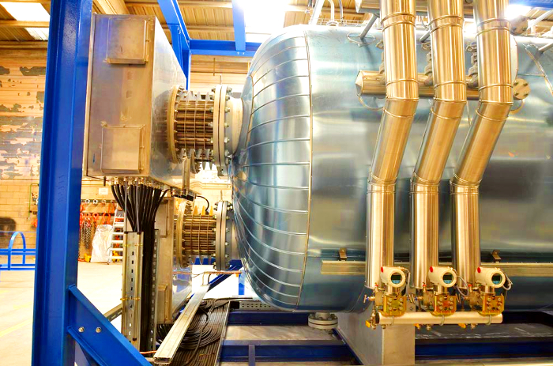
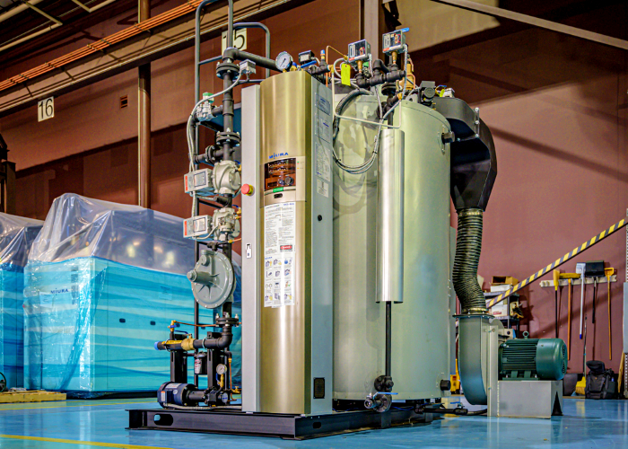

Industrial boilers are typically used in factories and other industrial settings. They are often responsible for heating water, steam, or other fluid substances. Some industrial boilers can last for many years while others may only last for a few months or even days. It is important to understand the lifespan of an industrial boiler so that it can be replaced when needed without causing any disruption in the production process.
Industrial boilers can endure withstanding the harshest industrial conditions for many years. You can expect fifteen to twenty years of effective service from your equipment, as long as you treat it properly. The following factors are critical in determining if your boiler will stand the test of time:

Like any other device, your boiler will begin to wear and require maintenance if you continue to use it for a prolonged period. By adhering to these three tips, you can get the most out of your boiler system.
Embarking on a new boiler might be expensive, along with the price of purchasing and installing it at your facility. The expenses don't end there, either. An incorrectly installed boiler could eventually decrease your existing boiler's performance, drastically decreasing it.
When replacing a boiler, it's crucial to hire a professional installer who knows what he or she is doing in order to verify the boiler and its components are ready to do their job.
Boiler power indicates the midstream volume of steam that your boiler is likely to generate. As a rule, if you are utilizing your boiler only for a small industrial application, you will not require a whole lot of boiler output. But, if your boiler supplies a large amount of area heat, it may well need much higher energy.
Automatic cleaning systems, such as soot blowers which use differential pressure, will ensure that your boiler remains free of soot and other contaminants that can eat away at your boiler. Leak monitoring is yet another critical procedure for maintaining your boiler. A photoreactive chemical, or a system based on sound frequencies, is employed to detect leaks that can allow water into the boiler, inflicting rust and other issues.

Replacing your industrial boiler should be costly, from the cost of the system, the installation, downtime, and health benefits. However, your performance depends on how efficiently your boiler works. Here are two examples of when it may be time to replace your boiler.
Constantly Paying For Repairs
A boiler will often need replacement parts or repairs over time, but if you notice that it's constantly in need of repairs, then perhaps it's time for a new system. Of course, installing an entirely new gas boiler will be considerably more expensive than a repair, but investing in alternative parts and spending hours on boiler repairs may cost more than simply purchasing a brand new boiler.
The Boiler Is Old
If your equipment is fifteen years old, twenty years, or even more, it might be worth analyzing whether a new system would be a better option. For instance, new boiler technology is constantly improving the efficiency of boiler systems. Running an old system could perhaps get the job done, however, it could cost you significantly more than running a current boiler system.
In conclusion, industrial boilers last an average of 15 years. However, proper maintenance and care can prolong the life of the boiler. It is important to have a qualified technician inspect and maintain the boiler regularly in order to avoid costly repairs or replacements.